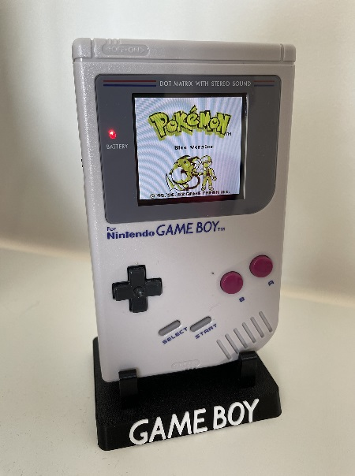

RetroMax
Witaj na stronie poświęconej zbieraniu, naprawianiu i modyfikowaniu retro konsol i nie tylko.
Początki
Moją przygoda z kolekcjonowaniem wszelkiego sprzętu grającego rozpoczeła się w roku 2022. Wówczas postawnowiłem sprawić sobie jeden ze starych GameBoy-ów, o którym zawsze marzyłem jako dziecko. Wtedy to właśnie odkryłem wspaniały świat modyfikacji tego sprzętu, pozwalający między innymi na wymianę przestarząłych komponentów jak ekrany (wtedy jeszcze nie podświetlane) czy głośniki. Idąc po nitce do kłębka zacząłem również zgłębiać tajniki innych konsol i przepadłem z kretesem. Strając się łaczyć pożyteczne z przyjemnym postanowiłem zawsze nabywać sprzęt wadliwy bądź uszkodzony i przywracać go do dawnej świetności. Tak oto jednocześnie dosknoaliłem swoje umięjętności lutownicze i elektroniczne. Choć z wykształcenia jestem inżynierem to dopiero w tym hobby odnalazłem prawidziwą pasje majstrkowicza. Mam nadziieję że będę mógł rownież przybliżyć ją Tobie drogi czytelniku.
